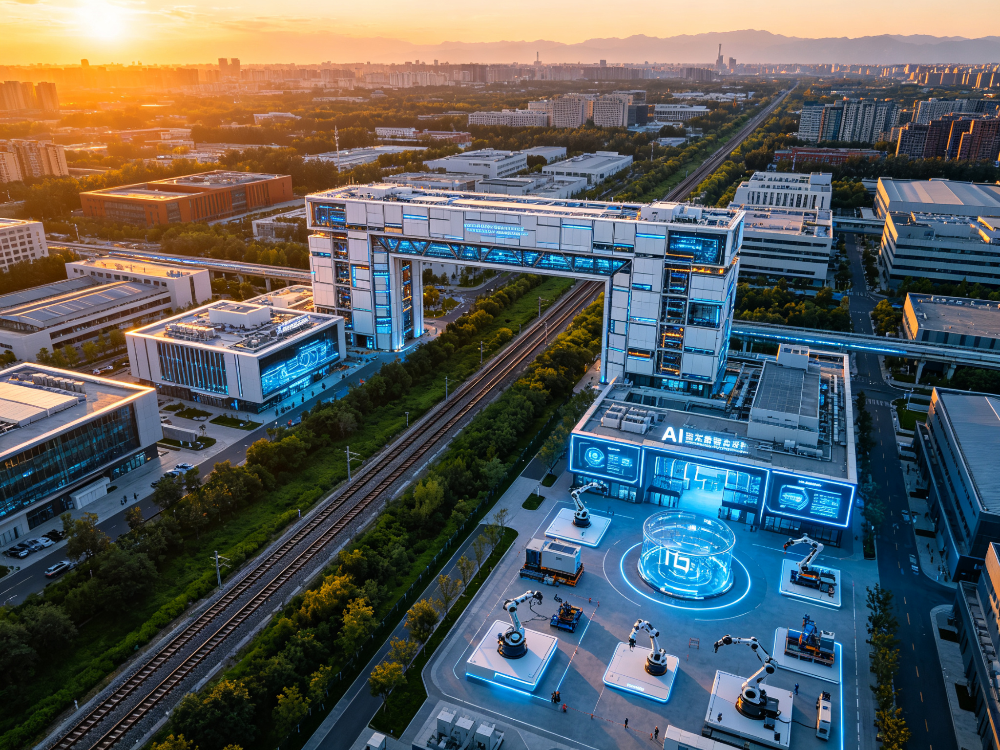
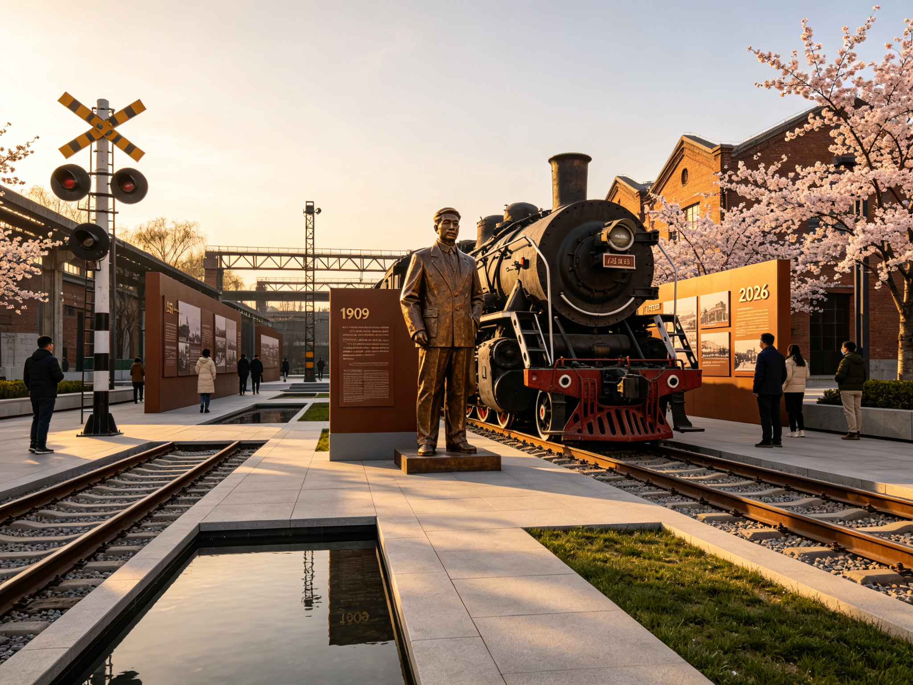
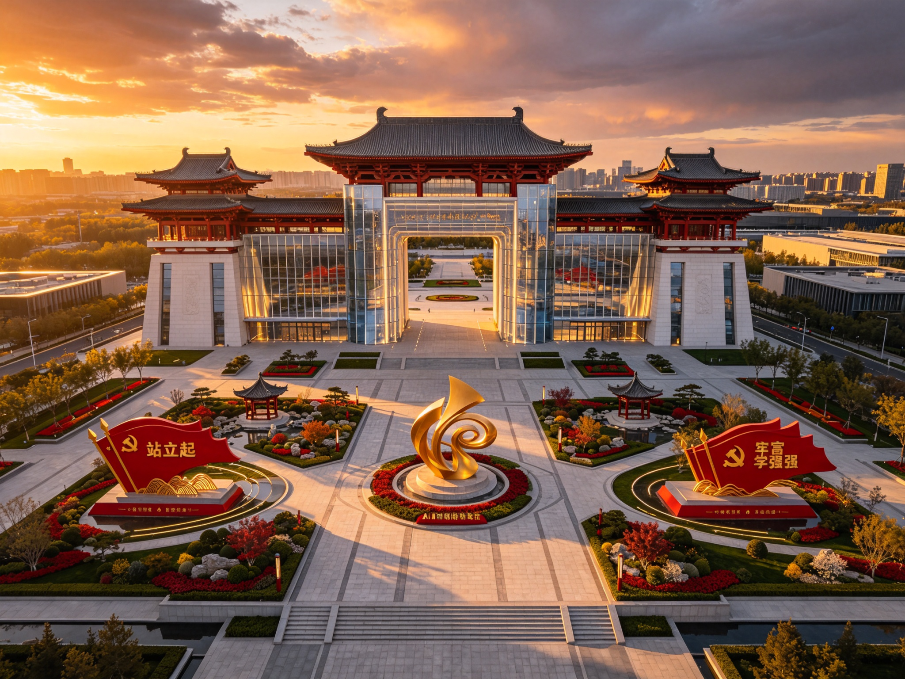
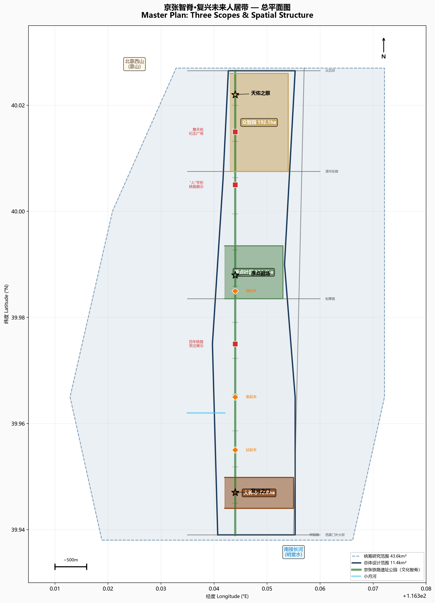
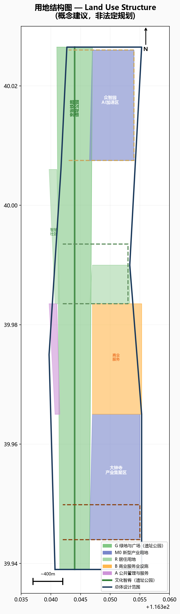
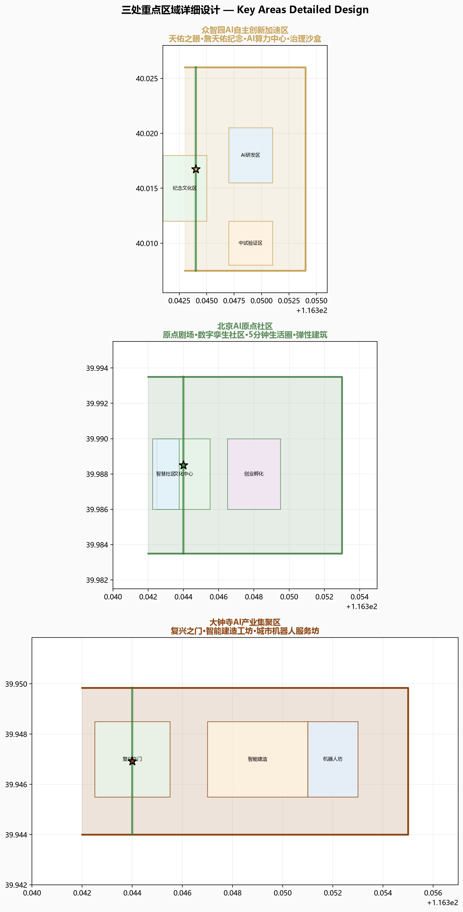
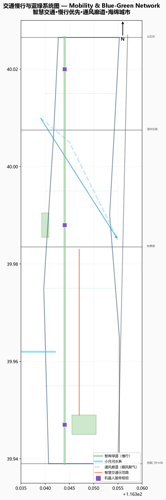

京张智脊核心节点动态展示 | 30s | 21:9 | Seedance 2.5生成
科技不是目的，服务于人的美好生活才是。弹性功能组合，动态适应未来产业用途。
1909年詹天佑主持修建，第一条完全由中国人自建的官办铁路。从35km/h争气路到350km/h复兴路。
藏风聚气、背山面水、天人合一。AI分析山水格局，传统智慧现代转译，十大子系统动态平衡。
从追赶者到引领者的历史跨越。站起来·富起来·强起来三大主题空间，向世界展示中国智慧。






